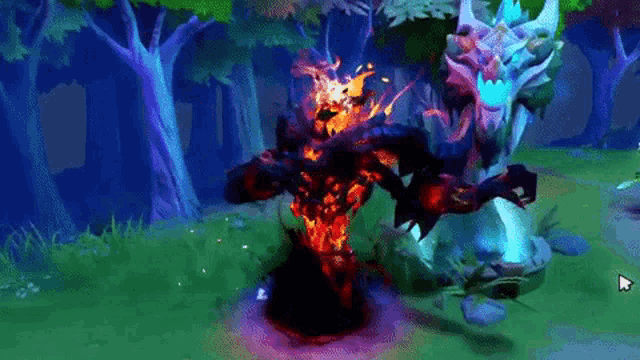

Информация об авторе
Трунов Егор Викторович
ЭФБО-14-24
ЭФБО-14-24
Обо мне: Ходит по карте с пафосом, собирает души в свою коллекцию. Если его тронуть — отвечает тремя огненными шарами в лицо. Его главный жизненный принцип: "Всё равно что в меня кричат, я уже заспавнил Ульту".
Работал коллекционером. Собирал души и хвастался.
Работал заклинателем. Пугал и разбирал на части.
Работал теневым демоном. Устраивал тьму и апокалипсис.